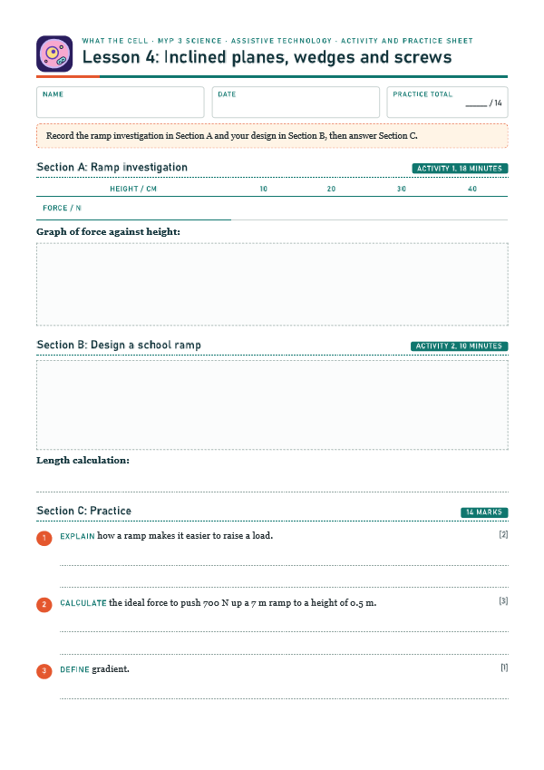

By the end of the lesson you can
- Describe how an inclined plane reduces the force needed
- Calculate gradient and the force along an ideal ramp
- Investigate how ramp height affects force
- Explain how wedges and screws are inclined planes
Keys: arrows or a presentation clicker move the slides, F for full screen. Slides with a red dot have a video or simulation.
Videos (all 5 minutes or less)
- 3:20
Inclined Planes - Intro to Physics
Udacity. While you watch: Why is less force needed on a ramp? Slide 9.
Simulations
- Lab
- PhET
Ramp: Forces and Motion
PhET, University of Colorado Boulder. Try the tasks on the simulation slide.
Print and practise

Activity and practice sheet
Used in the lesson’s activities, with practice questions. Your teacher has the answers.
Download (PDF)Lesson 4 slides
All 16 slides in one file, to read again or print. The video buttons on the slides open YouTube.
Download the slides (PDF)Revising? The Revision tab on the unit page has the unit notes and review.
Class activity pack
Everything to print for the lesson’s activities: picture cards, sorting mats, station cards with their kit lists, and the teacher’s set-up notes. Print it before class.
Download the activity pack (PDF)Notes: Inclined planes, wedges and screws
inclined plane
A sloping surface: a ramp. For example: wheelchair ramp.
gradient
Height / horizontal length: how steep a slope is. For example: 1 : 12 for ramps.
wedge
Two inclined planes back to back that split or lift. For example: an axe, a door stop.
screw
An inclined plane wrapped round a rod. For example: wood screw, jar lid.
friction
A force that opposes movement between surfaces. For example: wheels on a ramp.
weight
The force of gravity on an object. For example: 70 kg is about 700 N.
screw thread
A ramp wound round a rod: each turn moves the screw a short distance with great force. For example: jar lids, bottle tops.
Key words
| inclined plane | ramp |
|---|---|
| gradient | height / horizontal length |
| wedge | two ramps back to back |
| screw | ramp wrapped round a rod |
| friction | force opposing motion |